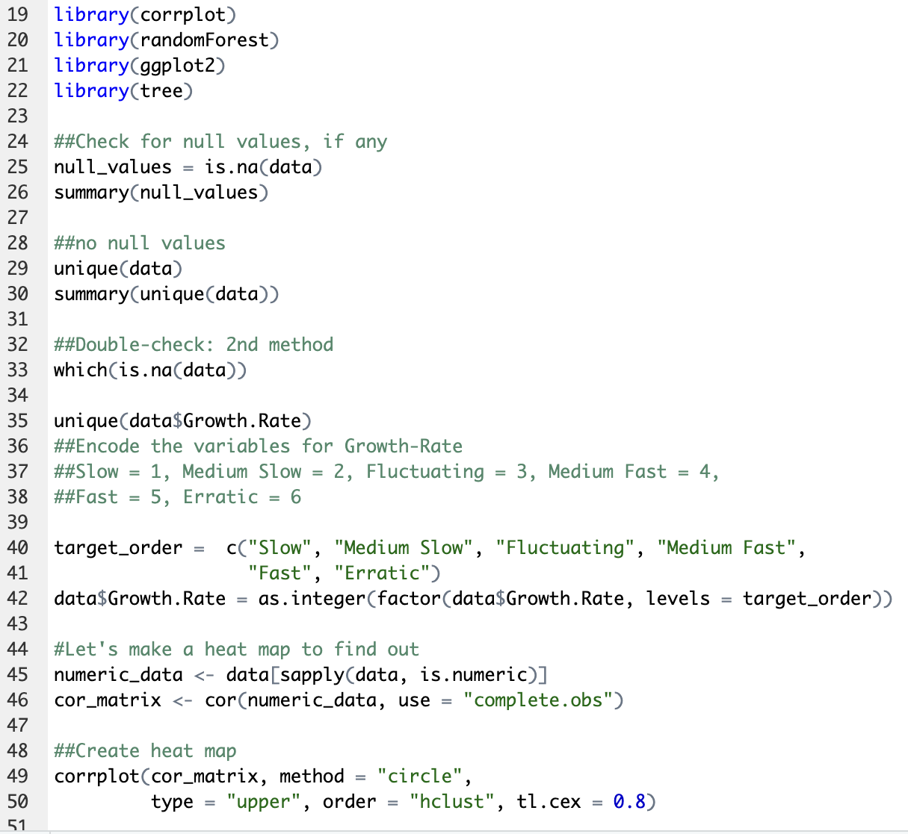
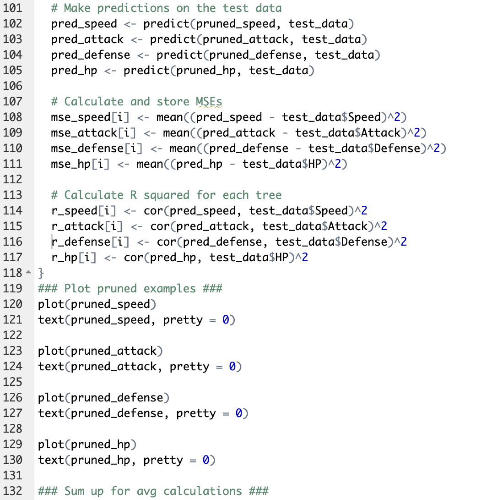
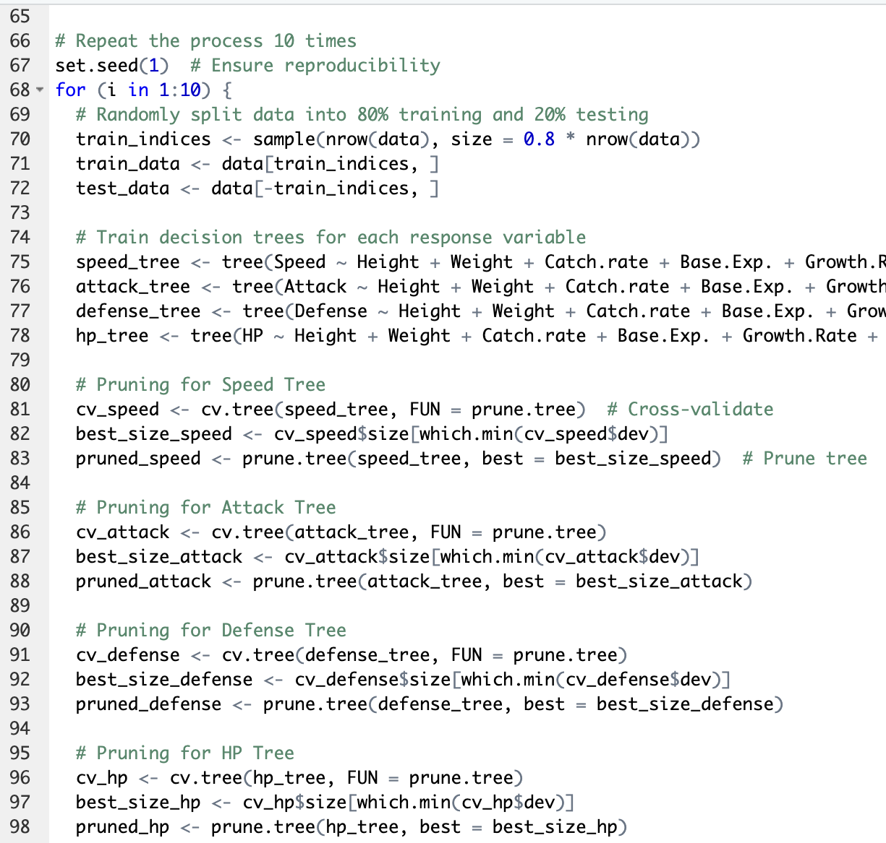
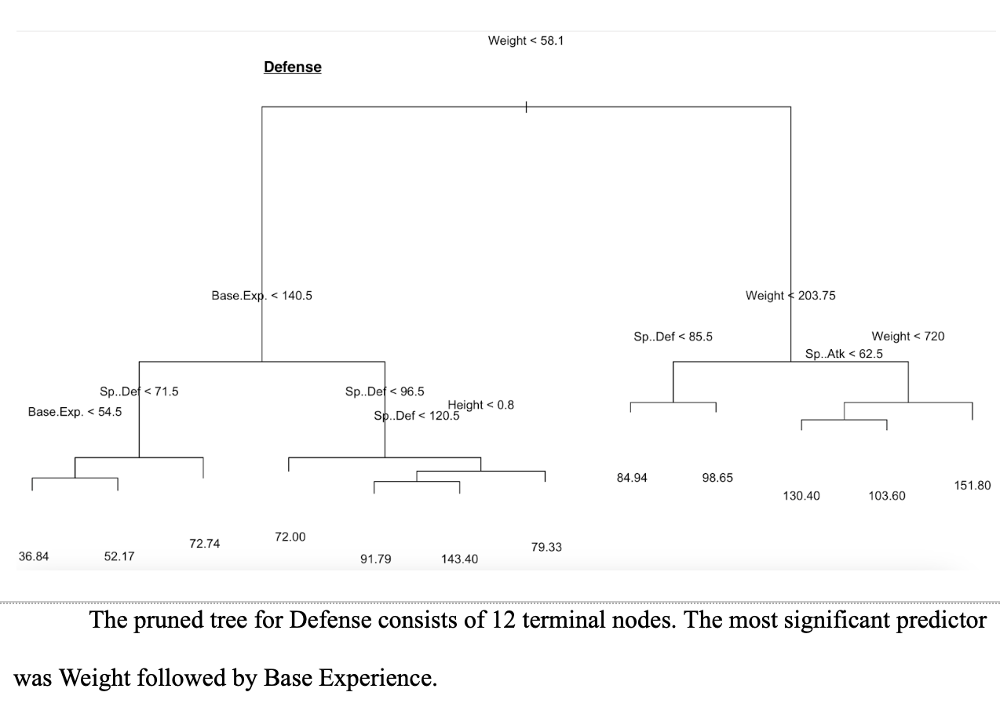
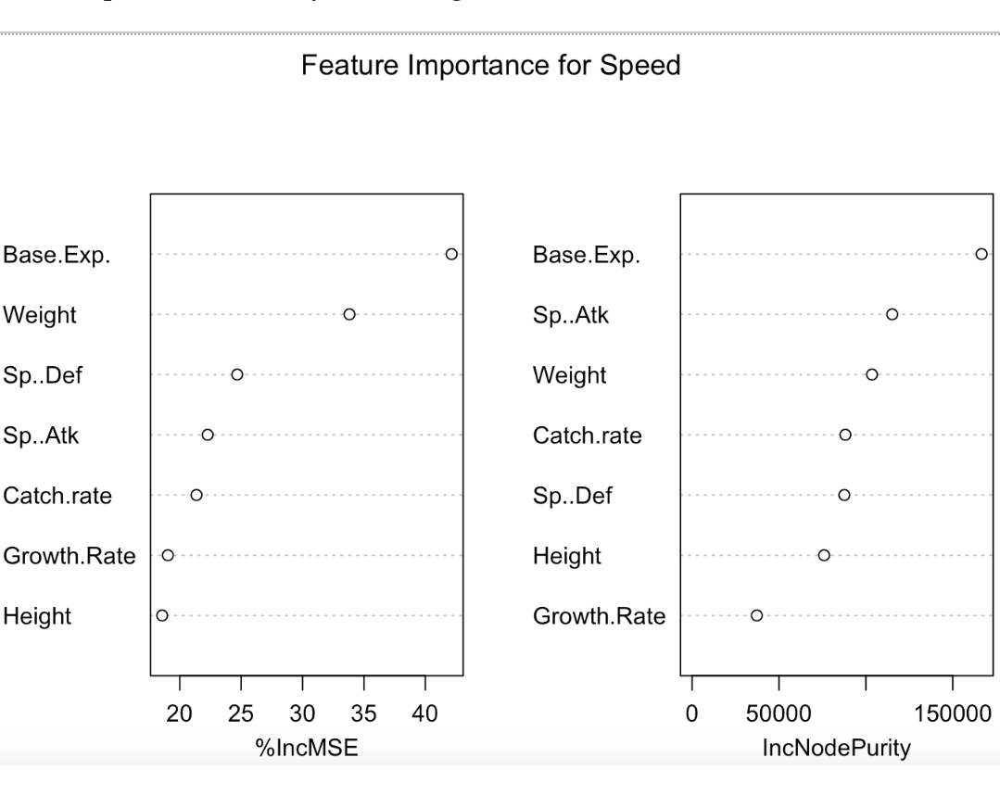

Predictive Data Modeling
A data science project analyzing a character-attribute dataset to uncover performance trends and predict outcomes using machine learning models.
Overview
A statistical and machine learning project conducted in R to analyze character attributes and predict performance outcomes. After thorough data cleaning and exploratory analysis of the large dataset, the project applied decision tree and random forest models to identify key performance drivers and compare results across different model types.Tech Stack
R | ggplot2 | tree | randomForest | corrplotCode Snippets





Other Features
- Models were tested for multiple iterations to account for randomness variability.
- Accuracy measurements like RMSE were calculated to confirm findings.